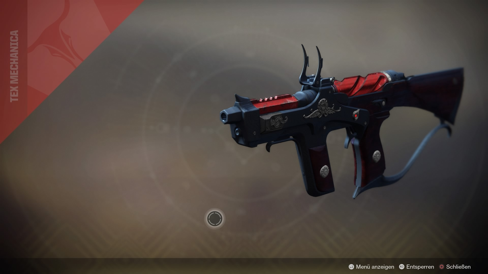
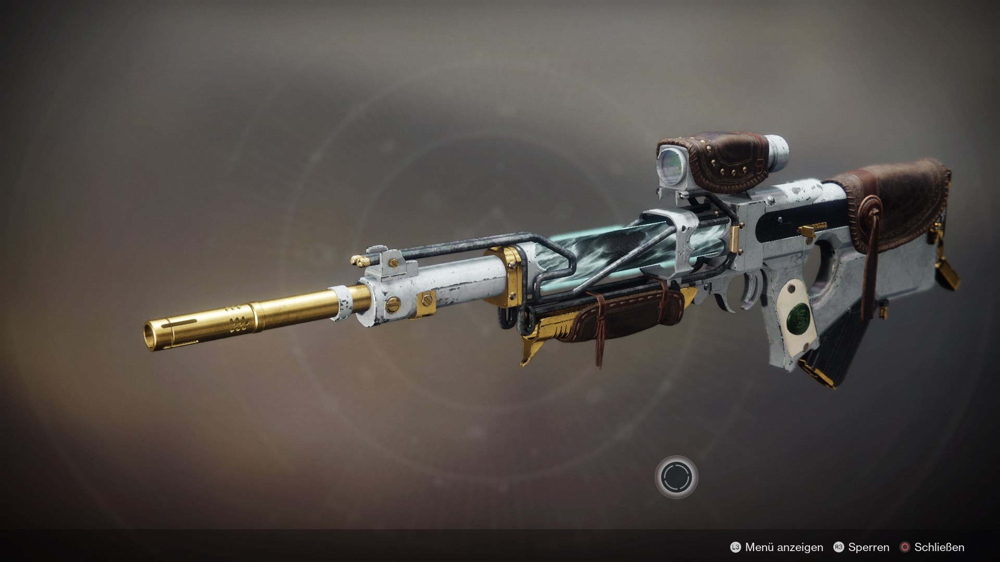

Hier sind ein paar Waffen aus Destiny 2, welche ich habe und etwas erklären will. Die Liste ist willkürlich zusammengesucht und zudem ist auf den meisten Waffen der Calus Nr.1 Shader gemacht wurden.
Anonymer Herbstwind:
Diese Pistole ist sehr gut für PvP geeignet dank ihrer schnellen feuerrate und dem möglichem Perk "Kill Clip", welcher für erhohten Damage nach einem Kill sorgt.
Besserer Teufel:
Diese Handfeuerwaffe was ein muss im ersten Jahr von Destiny 2. Ihr DPS (Damage pro sekunde) war der beste den es im spiel gab und durch ihre Explosivgeschosse war sie auch auf reichweite gut.
Crimils Dolch:
Die Handfeuerwaffe hat in ihrem re-work om zweitem Jahr ordentlich an stärke in PvP gewonnen. Durch Zeitladung (Explosivgeschosse mit verzögerung) und dem Fall Magazin (Sehr hohes nachladen mit verlust von Munition) ist sie extrem gut.
Dorn:
Die Exotische Handfeuerwaffe Dorn ist sehr interesannt. Ich perk ist das sie einen Gift Dot auf den gegner setzt welcher durchgängigen schaden verursacht.
Drachenatem:
Drachenatem ist ein sehr gutes SMG mit einem Leichtgewichtgeheuse welches macht das man ein erhöhtes bewegungstempo hat. Sie ist sehr gut um sich schnell in PvP zu bewegen.
Düsteres Versprechen:
Diese Leichtgewicht Handfeuerwaffe ist durch ihren Hohen DMG trotz des Leichtgewichtes eine sehr gute Waffe. In PvE und PvP ist sie sehr gut.
Gefühllos:
Dieses Scout Gewehr aus der Schwarzen Waffenkammer ist durch ihrn Hohen DMG sehr effektiev in den meisten Fernkampf Kämfen.
Gute Aussicht:
Gute Aussicht ist aus der zweiten Saison von Destiny 2 und war damals noch das beste Automatik Gewehr das es Gab.
Hammerhead:
Dieses MG ist eines der ersten seiner art in Destiny 2. Es stammt genau wie Gefüllos aus der Schwarzen Waffenkammer und ist bisher eine des besten power waffen die es gibt.

Huckleberry:
Dieses Exotische SMG ist ein monter wen es darum geht viele kleinere gegner möglichst schnell zu töten, den wen sie einen kill macht läd sie sich automatisch wieder nach.
Ikelos-HFW:
Diese Handfeuerwaffe ist schon wieder sehr gut in PvP. Sie schiest schnell, hat geringen rückstos und macht guten schaden.
Ikelos-SG:
Durch ihren perk "Röhrenlauf" welcher bewirkt das man mehr schaden macht nach einem Nahkampf treffer ist diese Shotgun ein must have gegen grösere Bosse wie in Raids
Izanagis Bürde:
Dieses Exotische Scharfschützengewehr ist allen im allen ein gutes Scharfschützengewehr. Ihr Perk die schüsse zu einem schuss zu bündeln ist jedoch nicht so gut da dieser weniger schaden macht als wenn man alle schiesen würde.
Langer Schatten:
Personlich ist diese Waffe mein lieblings Scharfschützengewehr da sie ein sehr hohes DMG Potenzial hat und sie sehr vergebend ist durch ihre hohe schuss anzahl.
Manannan SR4:
Dieses Scout Gewehr war im ersten jahr extrem gut da sie mit Mitternacht ohne Namen die einzigen waren die Explosivgeschosse hatten. Zudem ist sie eine Leichtgewicht Waffe.
Mitternacht ohne Namen:
Zusammen mit der Manannan sind sie wie bereits gesagt durch ihre Explosivgeschosse sehr gute Scout Gewehr im ersten Jahr gewesen.
Mitternachtsputsch:
Diese Waffe wird von einigen Spielern als die beste Handfeuerwaffe bezeichnet. Personlich finde ich sie gut durch ihr Leichtgewicht aber mehr auch nicht.

Nachtwache:
Dieses Scout Gewehr welches mit der Saison des Drifter gekommen ist hat Personlich die Besten Random Rolls die es auf Scout Gewehr geben kann. Von Explosivgeschossen bis hin zu Grenadier ist alles dabei.
Nation Der Bestien:
Diese Handfeuerwaffe ist meiner meinung nach die beste Handfeuerwaffe welche es gerade im spiel gibt. Ihre Curated Perks sind einfach nur das beste.
Redrix Breitschwer:
Dieses Impulsgewehr hat einen sehr großen grinde mit sich gebracht. Es ist zwar aus PvP hat seinen Platz aber eher im PvE gefunden.
Sie Starrte Zurück:
Dieses Schwert war das Beste aus Jahr eins. Es war für jede situation gut.
Strykers Verläslichkeit:
Genau wie das Schwert Sie Starrte Zurück ist es sehr gut, mit dem unterschied das es mit dem perk "Umzingelt" kommt welcher den schaden erhöht wen mehr als 2 gegner in der nähe sind.
Sünden der Vergangenheit:
Dieser Rakentenwerfer ist eine der besten Power Waffen im ersten Jahr Gewesen. Durch ihren hohen DMG ist sie beim ersten Raid Boss Calus ein must have gewesen.
Telesto:
Telesto ist ein spasiges Exotisches Fusionsgewehr, welches kleine Fallen verschiest die wen man zu nahe kommt ausßgelöst werden.
Traktorkanone:
Damals im ersten Jahr von Destiny 2 war sie eine art Troll Waffe. Nun ist sie im Inventar von fast jedem Spieler durch den extremen De-Buff den sie auf einen gegner machen kann.
Unfaires Schicksal:
Dieses Scharfschützengewehr ist fast so gut wie Langer Schatten, jedoch kann in einem anderen slot benutzt werden, was sehr gut ist wen man z. B. keine Zweite Handfeuerwaffe haben will.
Whispern des Wurms:
Dieses Exotische Scharfschützengewehr hat sehr grosen DMG mit dem Perk das wenn man drei Kritische Treffer hintereinander Trift das Magazin Gratis nachgefüllt wird ohne Munition zu verwenden.